[10.5, 5.2, 3.25, 7.0][10.5, 5.2, 3.25, 7.0]Linear Algebra is the branch of mathematics that studies vector spaces and linear transformations between vector spaces, such as rotating a shape, scaling it up or down, translating it (ie. moving it), etc.
Machine Learning relies heavily on Linear Algebra, so it is essential to understand what vectors and matrices are, what operations you can perform with them, and how they can be useful.
A vector is a quantity defined by a magnitude and a direction. For example, a rocket’s velocity is a 3-dimensional vector: its magnitude is the speed of the rocket, and its direction is (hopefully) up. A vector can be represented by an array of numbers called scalars. Each scalar corresponds to the magnitude of the vector with regards to each dimension.
For example, say the rocket is going up at a slight angle: it has a vertical speed of 5,000 m/s, and also a slight speed towards the East at 10 m/s, and a slight speed towards the North at 50 m/s. The rocket’s velocity may be represented by the following vector:
velocity \(= \begin{pmatrix} 10 \\ 50 \\ 5000 \\ \end{pmatrix}\)
Note: by convention vectors are generally presented in the form of columns. Also, vector names are generally lowercase to distinguish them from matrices (which we will discuss below) and in bold (when possible) to distinguish them from simple scalar values such as \({meters\_per\_second} = 5026\).
A list of N numbers may also represent the coordinates of a point in an N-dimensional space, so it is quite frequent to represent vectors as simple points instead of arrows. A vector with 1 element may be represented as an arrow or a point on an axis, a vector with 2 elements is an arrow or a point on a plane, a vector with 3 elements is an arrow or point in space, and a vector with N elements is an arrow or a point in an N-dimensional space… which most people find hard to imagine.
Vectors have many purposes in Machine Learning, most notably to represent observations and predictions. For example, say we built a Machine Learning system to classify videos into 3 categories (good, spam, clickbait) based on what we know about them. For each video, we would have a vector representing what we know about it, such as:
video \(= \begin{pmatrix} 10.5 \\ 5.2 \\ 3.25 \\ 7.0 \end{pmatrix}\)
This vector could represent a video that lasts 10.5 minutes, but only 5.2% viewers watch for more than a minute, it gets 3.25 views per day on average, and it was flagged 7 times as spam. As you can see, each axis may have a different meaning.
Based on this vector our Machine Learning system may predict that there is an 80% probability that it is a spam video, 18% that it is clickbait, and 2% that it is a good video. This could be represented as the following vector:
class_probabilities \(= \begin{pmatrix} 0.80 \\ 0.18 \\ 0.02 \end{pmatrix}\)
In python, a vector can be represented in many ways, the simplest being a regular python list of numbers:
[10.5, 5.2, 3.25, 7.0][10.5, 5.2, 3.25, 7.0]Since we plan to do quite a lot of scientific calculations, it is much better to use NumPy’s ndarray, which provides a lot of convenient and optimized implementations of essential mathematical operations on vectors (for more details about NumPy, check out the NumPy tutorial). For example:
import numpy as np
video = np.array([10.5, 5.2, 3.25, 7.0])
videoarray([ 10.5 , 5.2 , 3.25, 7. ])The size of a vector can be obtained using the size attribute:
video.size4The \(i^{th}\) element (also called entry or item) of a vector \(\textbf{v}\) is noted \(\textbf{v}_i\).
Note that indices in mathematics generally start at 1, but in programming they usually start at 0. So to access \(\textbf{video}_3\) programmatically, we would write:
video[2] # 3rd element3.25To plot vectors we will use matplotlib, so let’s start by importing it (for details about matplotlib, check the matplotlib tutorial):
%matplotlib inline
import matplotlib.pyplot as pltLet’s create a couple very simple 2D vectors to plot:
u = np.array([2, 5])
v = np.array([3, 1])These vectors each have 2 elements, so they can easily be represented graphically on a 2D graph, for example as points:
x_coords, y_coords = zip(u, v)
plt.scatter(x_coords, y_coords, color=["r","b"])
plt.axis([0, 9, 0, 6])
plt.grid()
plt.show()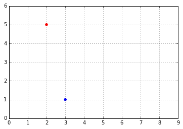
Vectors can also be represented as arrows. Let’s create a small convenience function to draw nice arrows:
def plot_vector2d(vector2d, origin=[0, 0], **options):
return plt.arrow(origin[0], origin[1], vector2d[0], vector2d[1],
head_width=0.2, head_length=0.3, length_includes_head=True,
**options)Now let’s draw the vectors u and v as arrows:
plot_vector2d(u, color="r")
plot_vector2d(v, color="b")
plt.axis([0, 9, 0, 6])
plt.grid()
plt.show()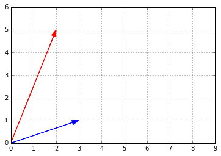
Plotting 3D vectors is also relatively straightforward. First let’s create two 3D vectors:
a = np.array([1, 2, 8])
b = np.array([5, 6, 3])Now let’s plot them using matplotlib’s Axes3D:
from mpl_toolkits.mplot3d import Axes3D
subplot3d = plt.subplot(111, projection='3d')
x_coords, y_coords, z_coords = zip(a,b)
subplot3d.scatter(x_coords, y_coords, z_coords)
subplot3d.set_zlim3d([0, 9])
plt.show()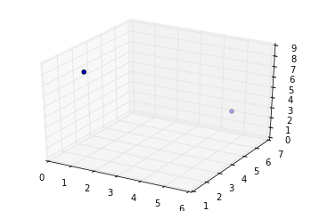
It is a bit hard to visualize exactly where in space these two points are, so let’s add vertical lines. We’ll create a small convenience function to plot a list of 3d vectors with vertical lines attached:
def plot_vectors3d(ax, vectors3d, z0, **options):
for v in vectors3d:
x, y, z = v
ax.plot([x,x], [y,y], [z0, z], color="gray", linestyle='dotted', marker=".")
x_coords, y_coords, z_coords = zip(*vectors3d)
ax.scatter(x_coords, y_coords, z_coords, **options)
subplot3d = plt.subplot(111, projection='3d')
subplot3d.set_zlim([0, 9])
plot_vectors3d(subplot3d, [a,b], 0, color=("r","b"))
plt.show()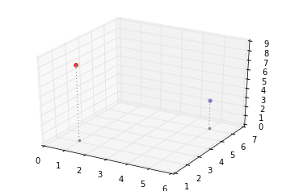
The norm of a vector \(\textbf{u}\), noted \(\left \Vert \textbf{u} \right \|\), is a measure of the length (a.k.a. the magnitude) of \(\textbf{u}\). There are multiple possible norms, but the most common one (and the only one we will discuss here) is the Euclidian norm, which is defined as:
\(\left \Vert \textbf{u} \right \| = \sqrt{\sum_{i}{\textbf{u}_i}^2}\)
We could implement this easily in pure python, recalling that \(\sqrt x = x^{\frac{1}{2}}\)
def vector_norm(vector):
squares = [element**2 for element in vector]
return sum(squares)**0.5
print("||", u, "|| =")
vector_norm(u)|| [2 5] || =5.3851648071345037However, it is much more efficient to use NumPy’s norm function, available in the linalg (Linear Algebra) module:
import numpy.linalg as LA
LA.norm(u)5.3851648071345037Let’s plot a little diagram to confirm that the length of vector \(\textbf{v}\) is indeed \(\approx5.4\):
radius = LA.norm(u)
plt.gca().add_artist(plt.Circle((0,0), radius, color="#DDDDDD"))
plot_vector2d(u, color="red")
plt.axis([0, 8.7, 0, 6])
plt.grid()
plt.show()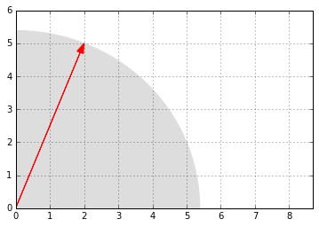
Looks about right!
Vectors of same size can be added together. Addition is performed elementwise:
print(" ", u)
print("+", v)
print("-"*10)
u + v [2 5]
+ [3 1]
----------array([5, 6])Let’s look at what vector addition looks like graphically:
plot_vector2d(u, color="r")
plot_vector2d(v, color="b")
plot_vector2d(v, origin=u, color="b", linestyle="dotted")
plot_vector2d(u, origin=v, color="r", linestyle="dotted")
plot_vector2d(u+v, color="g")
plt.axis([0, 9, 0, 7])
plt.text(0.7, 3, "u", color="r", fontsize=18)
plt.text(4, 3, "u", color="r", fontsize=18)
plt.text(1.8, 0.2, "v", color="b", fontsize=18)
plt.text(3.1, 5.6, "v", color="b", fontsize=18)
plt.text(2.4, 2.5, "u+v", color="g", fontsize=18)
plt.grid()
plt.show()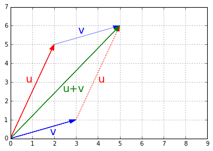
Vector addition is commutative, meaning that \(\textbf{u} + \textbf{v} = \textbf{v} + \textbf{u}\). You can see it on the previous image: following \(\textbf{u}\) then \(\textbf{v}\) leads to the same point as following \(\textbf{v}\) then \(\textbf{u}\).
Vector addition is also associative, meaning that \(\textbf{u} + (\textbf{v} + \textbf{w}) = (\textbf{u} + \textbf{v}) + \textbf{w}\).
If you have a shape defined by a number of points (vectors), and you add a vector \(\textbf{v}\) to all of these points, then the whole shape gets shifted by \(\textbf{v}\). This is called a geometric translation:
t1 = np.array([2, 0.25])
t2 = np.array([2.5, 3.5])
t3 = np.array([1, 2])
x_coords, y_coords = zip(t1, t2, t3, t1)
plt.plot(x_coords, y_coords, "c--", x_coords, y_coords, "co")
plot_vector2d(v, t1, color="r", linestyle=":")
plot_vector2d(v, t2, color="r", linestyle=":")
plot_vector2d(v, t3, color="r", linestyle=":")
t1b = t1 + v
t2b = t2 + v
t3b = t3 + v
x_coords_b, y_coords_b = zip(t1b, t2b, t3b, t1b)
plt.plot(x_coords_b, y_coords_b, "b-", x_coords_b, y_coords_b, "bo")
plt.text(4, 4.2, "v", color="r", fontsize=18)
plt.text(3, 2.3, "v", color="r", fontsize=18)
plt.text(3.5, 0.4, "v", color="r", fontsize=18)
plt.axis([0, 6, 0, 5])
plt.grid()
plt.show()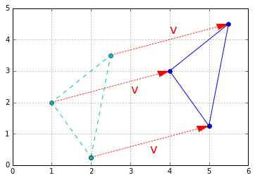
Finally, subtracting a vector is like adding the opposite vector.
Vectors can be multiplied by scalars. All elements in the vector are multiplied by that number, for example:
print("1.5 *", u, "=")
1.5 * u1.5 * [2 5] =array([ 3. , 7.5])Graphically, scalar multiplication results in changing the scale of a figure, hence the name scalar. The distance from the origin (the point at coordinates equal to zero) is also multiplied by the scalar. For example, let’s scale up by a factor of k = 2.5:
k = 2.5
t1c = k * t1
t2c = k * t2
t3c = k * t3
plt.plot(x_coords, y_coords, "c--", x_coords, y_coords, "co")
plot_vector2d(t1, color="r")
plot_vector2d(t2, color="r")
plot_vector2d(t3, color="r")
x_coords_c, y_coords_c = zip(t1c, t2c, t3c, t1c)
plt.plot(x_coords_c, y_coords_c, "b-", x_coords_c, y_coords_c, "bo")
plot_vector2d(k * t1, color="b", linestyle=":")
plot_vector2d(k * t2, color="b", linestyle=":")
plot_vector2d(k * t3, color="b", linestyle=":")
plt.axis([0, 9, 0, 9])
plt.grid()
plt.show()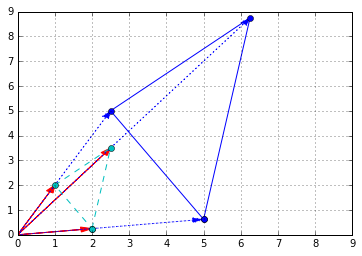
As you might guess, dividing a vector by a scalar is equivalent to multiplying by its multiplicative inverse (reciprocal):
\(\dfrac{\textbf{u}}{\lambda} = \dfrac{1}{\lambda} \times \textbf{u}\)
Scalar multiplication is commutative: \(\lambda \times \textbf{u} = \textbf{u} \times \lambda\).
It is also associative: \(\lambda_1 \times (\lambda_2 \times \textbf{u}) = (\lambda_1 \times \lambda_2) \times \textbf{u}\).
Finally, it is distributive over addition of vectors: \(\lambda \times (\textbf{u} + \textbf{v}) = \lambda \times \textbf{u} + \lambda \times \textbf{v}\).
plt.gca().add_artist(plt.Circle((0,0),1,color='c'))
plt.plot(0, 0, "ko")
plot_vector2d(v / LA.norm(v), color="k")
plot_vector2d(v, color="b", linestyle=":")
plt.text(0.3, 0.3, "$\hat{u}$", color="k", fontsize=18)
plt.text(1.5, 0.7, "$u$", color="b", fontsize=18)
plt.axis([-1.5, 5.5, -1.5, 3.5])
plt.grid()
plt.show()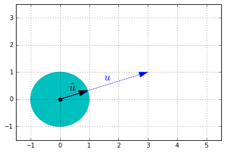
The dot product (also called scalar product or inner product in the context of the Euclidian space) of two vectors \(\textbf{u}\) and \(\textbf{v}\) is a useful operation that comes up fairly often in linear algebra. It is noted \(\textbf{u} \cdot \textbf{v}\), or sometimes \(⟨\textbf{u}|\textbf{v}⟩\) or \((\textbf{u}|\textbf{v})\), and it is defined as:
\(\textbf{u} \cdot \textbf{v} = \left \Vert \textbf{u} \right \| \times \left \Vert \textbf{v} \right \| \times cos(\theta)\)
where \(\theta\) is the angle between \(\textbf{u}\) and \(\textbf{v}\).
Another way to calculate the dot product is:
\(\textbf{u} \cdot \textbf{v} = \sum_i{\textbf{u}_i \times \textbf{v}_i}\)
The dot product is pretty simple to implement:
def dot_product(v1, v2):
return sum(v1i * v2i for v1i, v2i in zip(v1, v2))
dot_product(u, v)11But a much more efficient implementation is provided by NumPy with the dot function:
np.dot(u,v)11Equivalently, you can use the dot method of ndarrays:
u.dot(v)11Caution: the * operator will perform an elementwise multiplication, NOT a dot product:
print(" ",u)
print("* ",v, "(NOT a dot product)")
print("-"*10)
u * v [2 5]
* [3 1] (NOT a dot product)
----------array([6, 5])One of the many uses of the dot product is to calculate the angle between two non-zero vectors. Looking at the dot product definition, we can deduce the following formula:
\(\theta = \arccos{\left ( \dfrac{\textbf{u} \cdot \textbf{v}}{\left \Vert \textbf{u} \right \| \times \left \Vert \textbf{v} \right \|} \right ) }\)
Note that if \(\textbf{u} \cdot \textbf{v} = 0\), it follows that \(\theta = \dfrac{π}{2}\). In other words, if the dot product of two non-null vectors is zero, it means that they are orthogonal.
Let’s use this formula to calculate the angle between \(\textbf{u}\) and \(\textbf{v}\) (in radians):
def vector_angle(u, v):
cos_theta = u.dot(v) / LA.norm(u) / LA.norm(v)
return np.arccos(np.clip(cos_theta, -1, 1))
theta = vector_angle(u, v)
print("Angle =", theta, "radians")
print(" =", theta * 180 / np.pi, "degrees")Angle = 0.868539395286 radians
= 49.7636416907 degreesNote: due to small floating point errors, cos_theta may be very slightly outside of the \([-1, 1]\) interval, which would make arccos fail. This is why we clipped the value within the range, using NumPy’s clip function.
The dot product is also very useful to project points onto an axis. The projection of vector \(\textbf{v}\) onto \(\textbf{u}\)’s axis is given by this formula:
\(\textbf{proj}_{\textbf{u}}{\textbf{v}} = \dfrac{\textbf{u} \cdot \textbf{v}}{\left \Vert \textbf{u} \right \| ^2} \times \textbf{u}\)
Which is equivalent to:
\(\textbf{proj}_{\textbf{u}}{\textbf{v}} = (\textbf{v} \cdot \hat{\textbf{u}}) \times \hat{\textbf{u}}\)
u_normalized = u / LA.norm(u)
proj = v.dot(u_normalized) * u_normalized
plot_vector2d(u, color="r")
plot_vector2d(v, color="b")
plot_vector2d(proj, color="k", linestyle=":")
plt.plot(proj[0], proj[1], "ko")
plt.plot([proj[0], v[0]], [proj[1], v[1]], "b:")
plt.text(1, 2, "$proj_u v$", color="k", fontsize=18)
plt.text(1.8, 0.2, "$v$", color="b", fontsize=18)
plt.text(0.8, 3, "$u$", color="r", fontsize=18)
plt.axis([0, 8, 0, 5.5])
plt.grid()
plt.show()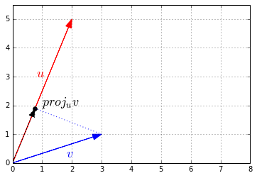
A matrix is a rectangular array of scalars (ie. any number: integer, real or complex) arranged in rows and columns, for example:
\[\begin{bmatrix} 10 & 20 & 30 \\ 40 & 50 & 60 \end{bmatrix}\]You can also think of a matrix as a list of vectors: the previous matrix contains either 2 horizontal 3D vectors or 3 vertical 2D vectors.
Matrices are convenient and very efficient to run operations on many vectors at a time. We will also see that they are great at representing and performing linear transformations such rotations, translations and scaling.
In python, a matrix can be represented in various ways. The simplest is just a list of python lists:
[
[10, 20, 30],
[40, 50, 60]
][[10, 20, 30], [40, 50, 60]]A much more efficient way is to use the NumPy library which provides optimized implementations of many matrix operations:
A = np.array([
[10,20,30],
[40,50,60]
])
Aarray([[10, 20, 30],
[40, 50, 60]])By convention matrices generally have uppercase names, such as \(A\).
In the rest of this tutorial, we will assume that we are using NumPy arrays (type ndarray) to represent matrices.
The size of a matrix is defined by its number of rows and number of columns. It is noted \(rows \times columns\). For example, the matrix \(A\) above is an example of a \(2 \times 3\) matrix: 2 rows, 3 columns. Caution: a \(3 \times 2\) matrix would have 3 rows and 2 columns.
To get a matrix’s size in NumPy:
A.shape(2, 3)Caution: the size attribute represents the number of elements in the ndarray, not the matrix’s size:
A.size6The number located in the \(i^{th}\) row, and \(j^{th}\) column of a matrix \(X\) is sometimes noted \(X_{i,j}\) or \(X_{ij}\), but there is no standard notation, so people often prefer to explicitely name the elements, like this: “let \(X = (x_{i,j})_{1 ≤ i ≤ m, 1 ≤ j ≤ n}\)”. This means that \(X\) is equal to:
\(X = \begin{bmatrix} x_{1,1} & x_{1,2} & x_{1,3} & \cdots & x_{1,n}\\ x_{2,1} & x_{2,2} & x_{2,3} & \cdots & x_{2,n}\\ x_{3,1} & x_{3,2} & x_{3,3} & \cdots & x_{3,n}\\ \vdots & \vdots & \vdots & \ddots & \vdots \\ x_{m,1} & x_{m,2} & x_{m,3} & \cdots & x_{m,n}\\ \end{bmatrix}\)
However in this notebook we will use the \(X_{i,j}\) notation, as it matches fairly well NumPy’s notation. Note that in math indices generally start at 1, but in programming they usually start at 0. So to access \(A_{2,3}\) programmatically, we need to write this:
A[1,2] # 2nd row, 3rd column60The \(i^{th}\) row vector is sometimes noted \(M_i\) or \(M_{i,*}\), but again there is no standard notation so people often prefer to explicitely define their own names, for example: “let x\(_{i}\) be the \(i^{th}\) row vector of matrix \(X\)”. We will use the \(M_{i,*}\), for the same reason as above. For example, to access \(A_{2,*}\) (ie. \(A\)’s 2nd row vector):
A[1, :] # 2nd row vector (as a 1D array)array([40, 50, 60])Similarly, the \(j^{th}\) column vector is sometimes noted \(M^j\) or \(M_{*,j}\), but there is no standard notation. We will use \(M_{*,j}\). For example, to access \(A_{*,3}\) (ie. \(A\)’s 3rd column vector):
A[:, 2] # 3rd column vector (as a 1D array)array([30, 60])Note that the result is actually a one-dimensional NumPy array: there is no such thing as a vertical or horizontal one-dimensional array. If you need to actually represent a row vector as a one-row matrix (ie. a 2D NumPy array), or a column vector as a one-column matrix, then you need to use a slice instead of an integer when accessing the row or column, for example:
A[1:2, :] # rows 2 to 3 (excluded): this returns row 2 as a one-row matrixarray([[40, 50, 60]])A[:, 2:3] # columns 3 to 4 (excluded): this returns column 3 as a one-column matrixarray([[30],
[60]])A square matrix is a matrix that has the same number of rows and columns, for example a \(3 \times 3\) matrix:
\[\begin{bmatrix} 4 & 9 & 2 \\ 3 & 5 & 7 \\ 8 & 1 & 6 \end{bmatrix}\]An upper triangular matrix is a special kind of square matrix where all the elements below the main diagonal (top-left to bottom-right) are zero, for example:
\[\begin{bmatrix} 4 & 9 & 2 \\ 0 & 5 & 7 \\ 0 & 0 & 6 \end{bmatrix}\]Similarly, a lower triangular matrix is a square matrix where all elements above the main diagonal are zero, for example:
\[\begin{bmatrix} 4 & 0 & 0 \\ 3 & 5 & 0 \\ 8 & 1 & 6 \end{bmatrix}\]A triangular matrix is one that is either lower triangular or upper triangular.
A matrix that is both upper and lower triangular is called a diagonal matrix, for example:
\[\begin{bmatrix} 4 & 0 & 0 \\ 0 & 5 & 0 \\ 0 & 0 & 6 \end{bmatrix}\]You can construct a diagonal matrix using NumPy’s diag function:
np.diag([4, 5, 6])array([[4, 0, 0],
[0, 5, 0],
[0, 0, 6]])If you pass a matrix to the diag function, it will happily extract the diagonal values:
D = np.array([
[1, 2, 3],
[4, 5, 6],
[7, 8, 9],
])
np.diag(D)array([1, 5, 9])Finally, the identity matrix of size \(n\), noted \(I_n\), is a diagonal matrix of size \(n \times n\) with \(1\)’s in the main diagonal, for example \(I_3\):
\[\begin{bmatrix} 1 & 0 & 0 \\ 0 & 1 & 0 \\ 0 & 0 & 1 \end{bmatrix}\]Numpy’s eye function returns the identity matrix of the desired size:
np.eye(3)array([[ 1., 0., 0.],
[ 0., 1., 0.],
[ 0., 0., 1.]])The identity matrix is often noted simply \(I\) (instead of \(I_n\)) when its size is clear given the context. It is called the identity matrix because multiplying a matrix with it leaves the matrix unchanged as we will see below.
If two matrices \(Q\) and \(R\) have the same size \(m \times n\), they can be added together. Addition is performed elementwise: the result is also a \(m \times n\) matrix \(S\) where each element is the sum of the elements at the corresponding position: \(S_{i,j} = Q_{i,j} + R_{i,j}\)
\(S = \begin{bmatrix} Q_{11} + R_{11} & Q_{12} + R_{12} & Q_{13} + R_{13} & \cdots & Q_{1n} + R_{1n} \\ Q_{21} + R_{21} & Q_{22} + R_{22} & Q_{23} + R_{23} & \cdots & Q_{2n} + R_{2n} \\ Q_{31} + R_{31} & Q_{32} + R_{32} & Q_{33} + R_{33} & \cdots & Q_{3n} + R_{3n} \\ \vdots & \vdots & \vdots & \ddots & \vdots \\ Q_{m1} + R_{m1} & Q_{m2} + R_{m2} & Q_{m3} + R_{m3} & \cdots & Q_{mn} + R_{mn} \\ \end{bmatrix}\)
For example, let’s create a \(2 \times 3\) matrix \(B\) and compute \(A + B\):
B = np.array([[1,2,3], [4, 5, 6]])
Barray([[1, 2, 3],
[4, 5, 6]])Aarray([[10, 20, 30],
[40, 50, 60]])A + Barray([[11, 22, 33],
[44, 55, 66]])Addition is commutative, meaning that \(A + B = B + A\):
B + Aarray([[11, 22, 33],
[44, 55, 66]])It is also associative, meaning that \(A + (B + C) = (A + B) + C\):
C = np.array([[100,200,300], [400, 500, 600]])
A + (B + C)array([[111, 222, 333],
[444, 555, 666]])(A + B) + Carray([[111, 222, 333],
[444, 555, 666]])A matrix \(M\) can be multiplied by a scalar \(\lambda\). The result is noted \(\lambda M\), and it is a matrix of the same size as \(M\) with all elements multiplied by \(\lambda\):
\(\lambda M = \begin{bmatrix} \lambda \times M_{11} & \lambda \times M_{12} & \lambda \times M_{13} & \cdots & \lambda \times M_{1n} \\ \lambda \times M_{21} & \lambda \times M_{22} & \lambda \times M_{23} & \cdots & \lambda \times M_{2n} \\ \lambda \times M_{31} & \lambda \times M_{32} & \lambda \times M_{33} & \cdots & \lambda \times M_{3n} \\ \vdots & \vdots & \vdots & \ddots & \vdots \\ \lambda \times M_{m1} & \lambda \times M_{m2} & \lambda \times M_{m3} & \cdots & \lambda \times M_{mn} \\ \end{bmatrix}\)
A more concise way of writing this is:
\((\lambda M)_{i,j} = \lambda (M)_{i,j}\)
In NumPy, simply use the * operator to multiply a matrix by a scalar. For example:
2 * Aarray([[ 20, 40, 60],
[ 80, 100, 120]])Scalar multiplication is also defined on the right hand side, and gives the same result: \(M \lambda = \lambda M\). For example:
A * 2array([[ 20, 40, 60],
[ 80, 100, 120]])This makes scalar multiplication commutative.
It is also associative, meaning that \(\alpha (\beta M) = (\alpha \times \beta) M\), where \(\alpha\) and \(\beta\) are scalars. For example:
2 * (3 * A)array([[ 60, 120, 180],
[240, 300, 360]])(2 * 3) * Aarray([[ 60, 120, 180],
[240, 300, 360]])Finally, it is distributive over addition of matrices, meaning that \(\lambda (Q + R) = \lambda Q + \lambda R\):
2 * (A + B)array([[ 22, 44, 66],
[ 88, 110, 132]])2 * A + 2 * Barray([[ 22, 44, 66],
[ 88, 110, 132]])So far, matrix operations have been rather intuitive. But multiplying matrices is a bit more involved.
A matrix \(Q\) of size \(m \times n\) can be multiplied by a matrix \(R\) of size \(n \times q\). It is noted simply \(QR\) without multiplication sign or dot. The result \(P\) is an \(m \times q\) matrix where each element is computed as a sum of products:
\(P_{i,j} = \sum_{k=1}^n{Q_{i,k} \times R_{k,j}}\)
The element at position \(i,j\) in the resulting matrix is the sum of the products of elements in row \(i\) of matrix \(Q\) by the elements in column \(j\) of matrix \(R\).
\(P = \begin{bmatrix} Q_{11} R_{11} + Q_{12} R_{21} + \cdots + Q_{1n} R_{n1} & Q_{11} R_{12} + Q_{12} R_{22} + \cdots + Q_{1n} R_{n2} & \cdots & Q_{11} R_{1q} + Q_{12} R_{2q} + \cdots + Q_{1n} R_{nq} \\ Q_{21} R_{11} + Q_{22} R_{21} + \cdots + Q_{2n} R_{n1} & Q_{21} R_{12} + Q_{22} R_{22} + \cdots + Q_{2n} R_{n2} & \cdots & Q_{21} R_{1q} + Q_{22} R_{2q} + \cdots + Q_{2n} R_{nq} \\ \vdots & \vdots & \ddots & \vdots \\ Q_{m1} R_{11} + Q_{m2} R_{21} + \cdots + Q_{mn} R_{n1} & Q_{m1} R_{12} + Q_{m2} R_{22} + \cdots + Q_{mn} R_{n2} & \cdots & Q_{m1} R_{1q} + Q_{m2} R_{2q} + \cdots + Q_{mn} R_{nq} \end{bmatrix}\)
You may notice that each element \(P_{i,j}\) is the dot product of the row vector \(Q_{i,*}\) and the column vector \(R_{*,j}\):
\(P_{i,j} = Q_{i,*} \cdot R_{*,j}\)
So we can rewrite \(P\) more concisely as:
\(P = \begin{bmatrix} Q_{1,*} \cdot R_{*,1} & Q_{1,*} \cdot R_{*,2} & \cdots & Q_{1,*} \cdot R_{*,q} \\ Q_{2,*} \cdot R_{*,1} & Q_{2,*} \cdot R_{*,2} & \cdots & Q_{2,*} \cdot R_{*,q} \\ \vdots & \vdots & \ddots & \vdots \\ Q_{m,*} \cdot R_{*,1} & Q_{m,*} \cdot R_{*,2} & \cdots & Q_{m,*} \cdot R_{*,q} \end{bmatrix}\)
Let’s multiply two matrices in NumPy, using ndarray’s dot method:
\(E = AD = \begin{bmatrix} 10 & 20 & 30 \\ 40 & 50 & 60 \end{bmatrix} \begin{bmatrix} 2 & 3 & 5 & 7 \\ 11 & 13 & 17 & 19 \\ 23 & 29 & 31 & 37 \end{bmatrix} = \begin{bmatrix} 930 & 1160 & 1320 & 1560 \\ 2010 & 2510 & 2910 & 3450 \end{bmatrix}\)
D = np.array([
[ 2, 3, 5, 7],
[11, 13, 17, 19],
[23, 29, 31, 37]
])
E = A.dot(D)
Earray([[ 930, 1160, 1320, 1560],
[2010, 2510, 2910, 3450]])Let’s check this result by looking at one element, just to be sure: looking at \(E_{2,3}\) for example, we need to multiply elements in \(A\)’s \(2^{nd}\) row by elements in \(D\)’s \(3^{rd}\) column, and sum up these products:
40*5 + 50*17 + 60*312910E[1,2] # row 2, column 32910Looks good! You can check the other elements until you get used to the algorithm.
We multiplied a \(2 \times 3\) matrix by a \(3 \times 4\) matrix, so the result is a \(2 \times 4\) matrix. The first matrix’s number of columns has to be equal to the second matrix’s number of rows. If we try to multiply \(D\) by \(A\), we get an error because D has 4 columns while A has 2 rows:
try:
D.dot(A)
except ValueError as e:
print("ValueError:", e)ValueError: shapes (3,4) and (2,3) not aligned: 4 (dim 1) != 2 (dim 0)This illustrates the fact that matrix multiplication is NOT commutative: in general \(QR ≠ RQ\)
In fact, \(QR\) and \(RQ\) are only both defined if \(Q\) has size \(m \times n\) and \(R\) has size \(n \times m\). Let’s look at an example where both are defined and show that they are (in general) NOT equal:
F = np.array([
[5,2],
[4,1],
[9,3]
])
A.dot(F)array([[400, 130],
[940, 310]])F.dot(A)array([[130, 200, 270],
[ 80, 130, 180],
[210, 330, 450]])On the other hand, matrix multiplication is associative, meaning that \(Q(RS) = (QR)S\). Let’s create a \(4 \times 5\) matrix \(G\) to illustrate this:
G = np.array([
[8, 7, 4, 2, 5],
[2, 5, 1, 0, 5],
[9, 11, 17, 21, 0],
[0, 1, 0, 1, 2]])
A.dot(D).dot(G) # (AB)Garray([[21640, 28390, 27320, 31140, 13570],
[47290, 62080, 60020, 68580, 29500]])A.dot(D.dot(G)) # A(BG)array([[21640, 28390, 27320, 31140, 13570],
[47290, 62080, 60020, 68580, 29500]])It is also distributive over addition of matrices, meaning that \((Q + R)S = QS + RS\). For example:
(A + B).dot(D)array([[1023, 1276, 1452, 1716],
[2211, 2761, 3201, 3795]])A.dot(D) + B.dot(D)array([[1023, 1276, 1452, 1716],
[2211, 2761, 3201, 3795]])The product of a matrix \(M\) by the identity matrix (of matching size) results in the same matrix \(M\). More formally, if \(M\) is an \(m \times n\) matrix, then:
\(M I_n = I_m M = M\)
This is generally written more concisely (since the size of the identity matrices is unambiguous given the context):
\(MI = IM = M\)
For example:
A.dot(np.eye(3))array([[ 10., 20., 30.],
[ 40., 50., 60.]])np.eye(2).dot(A)array([[ 10., 20., 30.],
[ 40., 50., 60.]])Caution: NumPy’s * operator performs elementwise multiplication, NOT a matrix multiplication:
A * B # NOT a matrix multiplicationarray([[ 10, 40, 90],
[160, 250, 360]])The @ infix operator
Python 3.5 introduced the @ infix operator for matrix multiplication, and NumPy 1.10 added support for it. If you are using Python 3.5+ and NumPy 1.10+, you can simply write A @ D instead of A.dot(D), making your code much more readable (but less portable). This operator also works for vector dot products.
import sys
print("Python version: {}.{}.{}".format(*sys.version_info))
print("Numpy version:", np.version.version)
# Uncomment the following line if your Python version is ≥3.5
# and your NumPy version is ≥1.10:
#A @ DPython version: 3.5.3
Numpy version: 1.12.1Note: Q @ R is actually equivalent to Q.__matmul__(R) which is implemented by NumPy as np.matmul(Q, R), not as Q.dot(R). The main difference is that matmul does not support scalar multiplication, while dot does, so you can write Q.dot(3), which is equivalent to Q * 3, but you cannot write Q @ 3 (more details).
The transpose of a matrix \(M\) is a matrix noted \(M^T\) such that the \(i^{th}\) row in \(M^T\) is equal to the \(i^{th}\) column in \(M\):
$ A^T = \[\begin{bmatrix} 10 & 20 & 30 \\ 40 & 50 & 60 \end{bmatrix}\] ^T = \[\begin{bmatrix} 10 & 40 \\ 20 & 50 \\ 30 & 60 \end{bmatrix}\]$
In other words, (\(A^T)_{i,j}\) = \(A_{j,i}\)
Obviously, if \(M\) is an \(m \times n\) matrix, then \(M^T\) is an \(n \times m\) matrix.
Note: there are a few other notations, such as \(M^t\), \(M′\), or \({^t}M\).
In NumPy, a matrix’s transpose can be obtained simply using the T attribute:
Aarray([[10, 20, 30],
[40, 50, 60]])A.Tarray([[10, 40],
[20, 50],
[30, 60]])As you might expect, transposing a matrix twice returns the original matrix:
A.T.Tarray([[10, 20, 30],
[40, 50, 60]])Transposition is distributive over addition of matrices, meaning that \((Q + R)^T = Q^T + R^T\). For example:
(A + B).Tarray([[11, 44],
[22, 55],
[33, 66]])A.T + B.Tarray([[11, 44],
[22, 55],
[33, 66]])Moreover, \((Q \cdot R)^T = R^T \cdot Q^T\). Note that the order is reversed. For example:
(A.dot(D)).Tarray([[ 930, 2010],
[1160, 2510],
[1320, 2910],
[1560, 3450]])D.T.dot(A.T)array([[ 930, 2010],
[1160, 2510],
[1320, 2910],
[1560, 3450]])A symmetric matrix \(M\) is defined as a matrix that is equal to its transpose: \(M^T = M\). This definition implies that it must be a square matrix whose elements are symmetric relative to the main diagonal, for example:
\[\begin{bmatrix} 17 & 22 & 27 & 49 \\ 22 & 29 & 36 & 0 \\ 27 & 36 & 45 & 2 \\ 49 & 0 & 2 & 99 \end{bmatrix}\]The product of a matrix by its transpose is always a symmetric matrix, for example:
D.dot(D.T)array([[ 87, 279, 547],
[ 279, 940, 1860],
[ 547, 1860, 3700]])As we mentionned earlier, in NumPy (as opposed to Matlab, for example), 1D really means 1D: there is no such thing as a vertical 1D-array or a horizontal 1D-array. So you should not be surprised to see that transposing a 1D array does not do anything:
uarray([2, 5])u.Tarray([2, 5])We want to convert \(\textbf{u}\) into a row vector before transposing it. There are a few ways to do this:
u_row = np.array([u])
u_rowarray([[2, 5]])Notice the extra square brackets: this is a 2D array with just one row (ie. a 1x2 matrix). In other words it really is a row vector.
u[np.newaxis, :]array([[2, 5]])This is quite explicit: we are asking for a new vertical axis, keeping the existing data as the horizontal axis.
u[np.newaxis]array([[2, 5]])This is equivalent, but a little less explicit.
u[None]array([[2, 5]])This is the shortest version, but you probably want to avoid it because it is unclear. The reason it works is that np.newaxis is actually equal to None, so this is equivalent to the previous version.
Ok, now let’s transpose our row vector:
u_row.Tarray([[2],
[5]])Great! We now have a nice column vector.
Rather than creating a row vector then transposing it, it is also possible to convert a 1D array directly into a column vector:
u[:, np.newaxis]array([[2],
[5]])We have already seen that vectors can be represented as points or arrows in N-dimensional space. Is there a good graphical representation of matrices? Well you can simply see a matrix as a list of vectors, so plotting a matrix results in many points or arrows. For example, let’s create a \(2 \times 4\) matrix P and plot it as points:
P = np.array([
[3.0, 4.0, 1.0, 4.6],
[0.2, 3.5, 2.0, 0.5]
])
x_coords_P, y_coords_P = P
plt.scatter(x_coords_P, y_coords_P)
plt.axis([0, 5, 0, 4])
plt.show()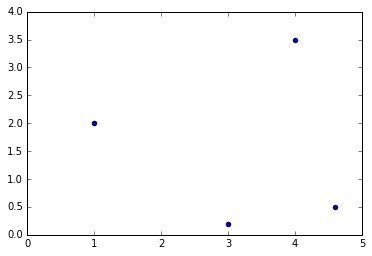
Of course we could also have stored the same 4 vectors as row vectors instead of column vectors, resulting in a \(4 \times 2\) matrix (the transpose of \(P\), in fact). It is really an arbitrary choice.
Since the vectors are ordered, you can see the matrix as a path and represent it with connected dots:
plt.plot(x_coords_P, y_coords_P, "bo")
plt.plot(x_coords_P, y_coords_P, "b--")
plt.axis([0, 5, 0, 4])
plt.grid()
plt.show()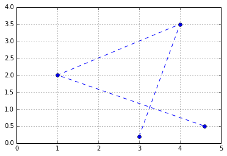
Or you can represent it as a polygon: matplotlib’s Polygon class expects an \(n \times 2\) NumPy array, not a \(2 \times n\) array, so we just need to give it \(P^T\):
from matplotlib.patches import Polygon
plt.gca().add_artist(Polygon(P.T))
plt.axis([0, 5, 0, 4])
plt.grid()
plt.show()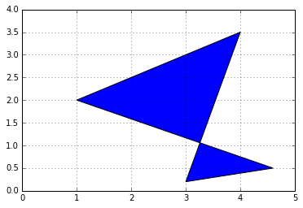
We saw earlier that vector addition results in a geometric translation, vector multiplication by a scalar results in rescaling (zooming in or out, centered on the origin), and vector dot product results in projecting a vector onto another vector, rescaling and measuring the resulting coordinate.
Similarly, matrix operations have very useful geometric applications.
First, adding two matrices together is equivalent to adding all their vectors together. For example, let’s create a \(2 \times 4\) matrix \(H\) and add it to \(P\), and look at the result:
H = np.array([
[ 0.5, -0.2, 0.2, -0.1],
[ 0.4, 0.4, 1.5, 0.6]
])
P_moved = P + H
plt.gca().add_artist(Polygon(P.T, alpha=0.2))
plt.gca().add_artist(Polygon(P_moved.T, alpha=0.3, color="r"))
for vector, origin in zip(H.T, P.T):
plot_vector2d(vector, origin=origin)
plt.text(2.2, 1.8, "$P$", color="b", fontsize=18)
plt.text(2.0, 3.2, "$P+H$", color="r", fontsize=18)
plt.text(2.5, 0.5, "$H_{*,1}$", color="k", fontsize=18)
plt.text(4.1, 3.5, "$H_{*,2}$", color="k", fontsize=18)
plt.text(0.4, 2.6, "$H_{*,3}$", color="k", fontsize=18)
plt.text(4.4, 0.2, "$H_{*,4}$", color="k", fontsize=18)
plt.axis([0, 5, 0, 4])
plt.grid()
plt.show()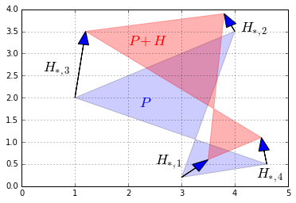
If we add a matrix full of identical vectors, we get a simple geometric translation:
H2 = np.array([
[-0.5, -0.5, -0.5, -0.5],
[ 0.4, 0.4, 0.4, 0.4]
])
P_translated = P + H2
plt.gca().add_artist(Polygon(P.T, alpha=0.2))
plt.gca().add_artist(Polygon(P_translated.T, alpha=0.3, color="r"))
for vector, origin in zip(H2.T, P.T):
plot_vector2d(vector, origin=origin)
plt.axis([0, 5, 0, 4])
plt.grid()
plt.show()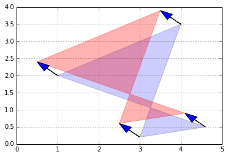
Although matrices can only be added together if they have the same size, NumPy allows adding a row vector or a column vector to a matrix: this is called broadcasting and is explained in further details in the NumPy tutorial. We could have obtained the same result as above with:
P + [[-0.5], [0.4]] # same as P + H2, thanks to NumPy broadcastingarray([[ 2.5, 3.5, 0.5, 4.1],
[ 0.6, 3.9, 2.4, 0.9]])Multiplying a matrix by a scalar results in all its vectors being multiplied by that scalar, so unsurprisingly, the geometric result is a rescaling of the entire figure. For example, let’s rescale our polygon by a factor of 60% (zooming out, centered on the origin):
def plot_transformation(P_before, P_after, text_before, text_after, axis = [0, 5, 0, 4], arrows=False):
if arrows:
for vector_before, vector_after in zip(P_before.T, P_after.T):
plot_vector2d(vector_before, color="blue", linestyle="--")
plot_vector2d(vector_after, color="red", linestyle="-")
plt.gca().add_artist(Polygon(P_before.T, alpha=0.2))
plt.gca().add_artist(Polygon(P_after.T, alpha=0.3, color="r"))
plt.text(P_before[0].mean(), P_before[1].mean(), text_before, fontsize=18, color="blue")
plt.text(P_after[0].mean(), P_after[1].mean(), text_after, fontsize=18, color="red")
plt.axis(axis)
plt.grid()
P_rescaled = 0.60 * P
plot_transformation(P, P_rescaled, "$P$", "$0.6 P$", arrows=True)
plt.show()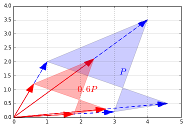
Matrix multiplication is more complex to visualize, but it is also the most powerful tool in the box.
Let’s start simple, by defining a \(1 \times 2\) matrix \(U = \begin{bmatrix} 1 & 0 \end{bmatrix}\). This row vector is just the horizontal unit vector.
U = np.array([[1, 0]])Now let’s look at the dot product \(U \cdot P\):
U.dot(P)array([[ 3. , 4. , 1. , 4.6]])These are the horizontal coordinates of the vectors in \(P\). In other words, we just projected \(P\) onto the horizontal axis:
def plot_projection(U, P):
U_P = U.dot(P)
axis_end = 100 * U
plot_vector2d(axis_end[0], color="black")
plt.gca().add_artist(Polygon(P.T, alpha=0.2))
for vector, proj_coordinate in zip(P.T, U_P.T):
proj_point = proj_coordinate * U
plt.plot(proj_point[0][0], proj_point[0][1], "ro")
plt.plot([vector[0], proj_point[0][0]], [vector[1], proj_point[0][1]], "r--")
plt.axis([0, 5, 0, 4])
plt.grid()
plt.show()
plot_projection(U, P)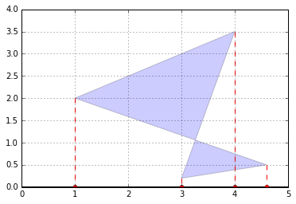
We can actually project on any other axis by just replacing \(U\) with any other unit vector. For example, let’s project on the axis that is at a 30° angle above the horizontal axis:
angle30 = 30 * np.pi / 180 # angle in radians
U_30 = np.array([[np.cos(angle30), np.sin(angle30)]])
plot_projection(U_30, P)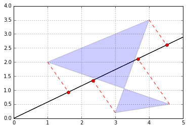
Good! Remember that the dot product of a unit vector and a matrix basically performs a projection on an axis and gives us the coordinates of the resulting points on that axis.
Now let’s create a \(2 \times 2\) matrix \(V\) containing two unit vectors that make 30° and 120° angles with the horizontal axis:
\(V = \begin{bmatrix} \cos(30°) & \sin(30°) \\ \cos(120°) & \sin(120°) \end{bmatrix}\)
angle120 = 120 * np.pi / 180
V = np.array([
[np.cos(angle30), np.sin(angle30)],
[np.cos(angle120), np.sin(angle120)]
])
Varray([[ 0.8660254, 0.5 ],
[-0.5 , 0.8660254]])Let’s look at the product \(VP\):
V.dot(P)array([[ 2.69807621, 5.21410162, 1.8660254 , 4.23371686],
[-1.32679492, 1.03108891, 1.23205081, -1.8669873 ]])The first row is equal to \(V_{1,*} P\), which is the coordinates of the projection of \(P\) onto the 30° axis, as we have seen above. The second row is \(V_{2,*} P\), which is the coordinates of the projection of \(P\) onto the 120° axis. So basically we obtained the coordinates of \(P\) after rotating the horizontal and vertical axes by 30° (or equivalently after rotating the polygon by -30° around the origin)! Let’s plot \(VP\) to see this:
P_rotated = V.dot(P)
plot_transformation(P, P_rotated, "$P$", "$VP$", [-2, 6, -2, 4], arrows=True)
plt.show()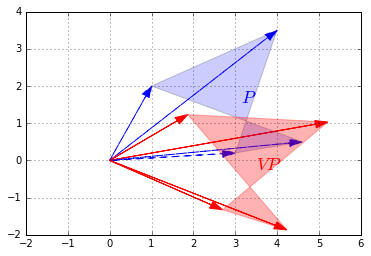
Matrix \(V\) is called a rotation matrix.
More generally, any linear transformation \(f\) that maps n-dimensional vectors to m-dimensional vectors can be represented as an \(m \times n\) matrix. For example, say \(\textbf{u}\) is a 3-dimensional vector:
\(\textbf{u} = \begin{pmatrix} x \\ y \\ z \end{pmatrix}\)
and \(f\) is defined as:
\(f(\textbf{u}) = \begin{pmatrix} ax + by + cz \\ dx + ey + fz \end{pmatrix}\)
This transormation \(f\) maps 3-dimensional vectors to 2-dimensional vectors in a linear way (ie. the resulting coordinates only involve sums of multiples of the original coordinates). We can represent this transformation as matrix \(F\):
\(F = \begin{bmatrix} a & b & c \\ d & e & f \end{bmatrix}\)
Now, to compute \(f(\textbf{u})\) we can simply do a matrix multiplication:
\(f(\textbf{u}) = F \textbf{u}\)
If we have a matric \(G = \begin{bmatrix}\textbf{u}_1 & \textbf{u}_2 & \cdots & \textbf{u}_q \end{bmatrix}\), where each \(\textbf{u}_i\) is a 3-dimensional column vector, then \(FG\) results in the linear transformation of all vectors \(\textbf{u}_i\) as defined by the matrix \(F\):
\(FG = \begin{bmatrix}f(\textbf{u}_1) & f(\textbf{u}_2) & \cdots & f(\textbf{u}_q) \end{bmatrix}\)
To summarize, the matrix on the left hand side of a dot product specifies what linear transormation to apply to the right hand side vectors. We have already shown that this can be used to perform projections and rotations, but any other linear transformation is possible. For example, here is a transformation known as a shear mapping:
F_shear = np.array([
[1, 1.5],
[0, 1]
])
plot_transformation(P, F_shear.dot(P), "$P$", "$F_{shear} P$",
axis=[0, 10, 0, 7])
plt.show()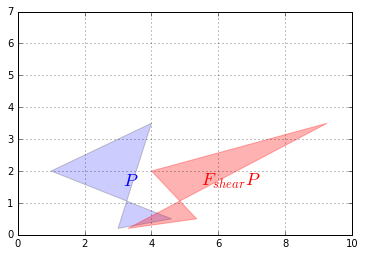
Let’s look at how this transformation affects the unit square:
Square = np.array([
[0, 0, 1, 1],
[0, 1, 1, 0]
])
plot_transformation(Square, F_shear.dot(Square), "$Square$", "$F_{shear} Square$",
axis=[0, 2.6, 0, 1.8])
plt.show()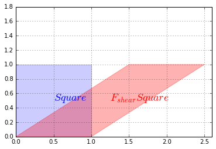
Now let’s look at a squeeze mapping:
F_squeeze = np.array([
[1.4, 0],
[0, 1/1.4]
])
plot_transformation(P, F_squeeze.dot(P), "$P$", "$F_{squeeze} P$",
axis=[0, 7, 0, 5])
plt.show()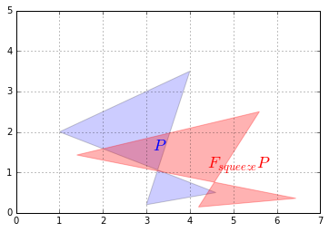
The effect on the unit square is:
plot_transformation(Square, F_squeeze.dot(Square), "$Square$", "$F_{squeeze} Square$",
axis=[0, 1.8, 0, 1.2])
plt.show()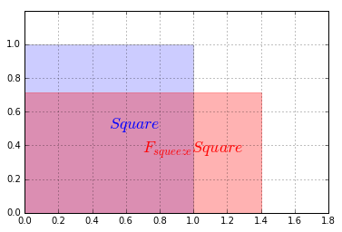
Let’s show a last one: reflection through the horizontal axis:
F_reflect = np.array([
[1, 0],
[0, -1]
])
plot_transformation(P, F_reflect.dot(P), "$P$", "$F_{reflect} P$",
axis=[-2, 9, -4.5, 4.5])
plt.show()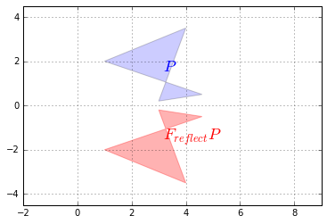
Now that we understand that a matrix can represent any linear transformation, a natural question is: can we find a transformation matrix that reverses the effect of a given transformation matrix \(F\)? The answer is yes… sometimes! When it exists, such a matrix is called the inverse of \(F\), and it is noted \(F^{-1}\).
For example, the rotation, the shear mapping and the squeeze mapping above all have inverse transformations. Let’s demonstrate this on the shear mapping:
F_inv_shear = np.array([
[1, -1.5],
[0, 1]
])
P_sheared = F_shear.dot(P)
P_unsheared = F_inv_shear.dot(P_sheared)
plot_transformation(P_sheared, P_unsheared, "$P_{sheared}$", "$P_{unsheared}$",
axis=[0, 10, 0, 7])
plt.plot(P[0], P[1], "b--")
plt.show()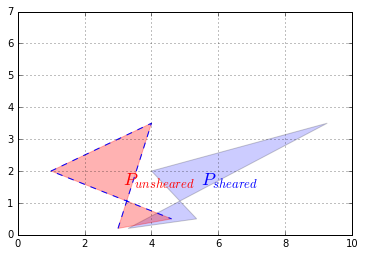
We applied a shear mapping on \(P\), just like we did before, but then we applied a second transformation to the result, and lo and behold this had the effect of coming back to the original \(P\) (we plotted the original \(P\)’s outline to double check). The second transformation is the inverse of the first one.
We defined the inverse matrix \(F_{shear}^{-1}\) manually this time, but NumPy provides an inv function to compute a matrix’s inverse, so we could have written instead:
F_inv_shear = LA.inv(F_shear)
F_inv_sheararray([[ 1. , -1.5],
[ 0. , 1. ]])Only square matrices can be inversed. This makes sense when you think about it: if you have a transformation that reduces the number of dimensions, then some information is lost and there is no way that you can get it back. For example say you use a \(2 \times 3\) matrix to project a 3D object onto a plane. The result may look like this:
plt.plot([0, 0, 1, 1, 0, 0.1, 0.1, 0, 0.1, 1.1, 1.0, 1.1, 1.1, 1.0, 1.1, 0.1],
[0, 1, 1, 0, 0, 0.1, 1.1, 1.0, 1.1, 1.1, 1.0, 1.1, 0.1, 0, 0.1, 0.1],
"r-")
plt.axis([-0.5, 2.1, -0.5, 1.5])
plt.show()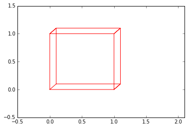
Looking at this image, it is impossible to tell whether this is the projection of a cube or the projection of a narrow rectangular object. Some information has been lost in the projection.
Even square transformation matrices can lose information. For example, consider this transformation matrix:
F_project = np.array([
[1, 0],
[0, 0]
])
plot_transformation(P, F_project.dot(P), "$P$", "$F_{project} \cdot P$",
axis=[0, 6, -1, 4])
plt.show()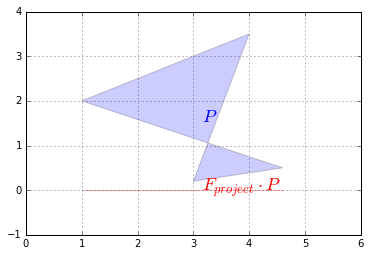
This transformation matrix performs a projection onto the horizontal axis. Our polygon gets entirely flattened out so some information is entirely lost and it is impossible to go back to the original polygon using a linear transformation. In other words, \(F_{project}\) has no inverse. Such a square matrix that cannot be inversed is called a singular matrix (aka degenerate matrix). If we ask NumPy to calculate its inverse, it raises an exception:
try:
LA.inv(F_project)
except LA.LinAlgError as e:
print("LinAlgError:", e)LinAlgError: Singular matrixHere is another example of a singular matrix. This one performs a projection onto the axis at a 30° angle above the horizontal axis:
angle30 = 30 * np.pi / 180
F_project_30 = np.array([
[np.cos(angle30)**2, np.sin(2*angle30)/2],
[np.sin(2*angle30)/2, np.sin(angle30)**2]
])
plot_transformation(P, F_project_30.dot(P), "$P$", "$F_{project\_30} \cdot P$",
axis=[0, 6, -1, 4])
plt.show()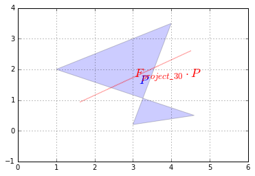
But this time, due to floating point rounding errors, NumPy manages to calculate an inverse (notice how large the elements are, though):
LA.inv(F_project_30)array([[ 1.20095990e+16, -2.08012357e+16],
[ -2.08012357e+16, 3.60287970e+16]])As you might expect, the dot product of a matrix by its inverse results in the identity matrix:
\(M \cdot M^{-1} = M^{-1} \cdot M = I\)
This makes sense since doing a linear transformation followed by the inverse transformation results in no change at all.
F_shear.dot(LA.inv(F_shear))array([[ 1., 0.],
[ 0., 1.]])Another way to express this is that the inverse of the inverse of a matrix \(M\) is \(M\) itself:
\(((M)^{-1})^{-1} = M\)
LA.inv(LA.inv(F_shear))array([[ 1. , 1.5],
[ 0. , 1. ]])Also, the inverse of scaling by a factor of \(\lambda\) is of course scaling by a factor or \(\frac{1}{\lambda}\):
$ (M)^{-1} = M^{-1}$
Once you understand the geometric interpretation of matrices as linear transformations, most of these properties seem fairly intuitive.
A matrix that is its own inverse is called an involution. The simplest examples are reflection matrices, or a rotation by 180°, but there are also more complex involutions, for example imagine a transformation that squeezes horizontally, then reflects over the vertical axis and finally rotates by 90° clockwise. Pick up a napkin and try doing that twice: you will end up in the original position. Here is the corresponding involutory matrix:
F_involution = np.array([
[0, -2],
[-1/2, 0]
])
plot_transformation(P, F_involution.dot(P), "$P$", "$F_{involution} \cdot P$",
axis=[-8, 5, -4, 4])
plt.show()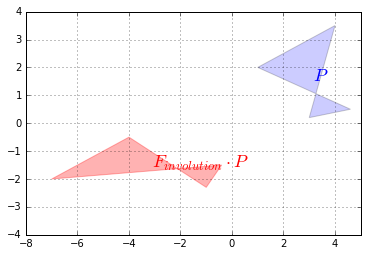
Finally, a square matrix \(H\) whose inverse is its own transpose is an orthogonal matrix:
\(H^{-1} = H^T\)
Therefore:
\(H \cdot H^T = H^T \cdot H = I\)
It corresponds to a transformation that preserves distances, such as rotations and reflections, and combinations of these, but not rescaling, shearing or squeezing. Let’s check that \(F_{reflect}\) is indeed orthogonal:
F_reflect.dot(F_reflect.T)array([[1, 0],
[0, 1]])The determinant of a square matrix \(M\), noted \(\det(M)\) or \(\det M\) or \(|M|\) is a value that can be calculated from its elements \((M_{i,j})\) using various equivalent methods. One of the simplest methods is this recursive approach:
\(|M| = M_{1,1}\times|M^{(1,1)}| - M_{1,2}\times|M^{(1,2)}| + M_{1,3}\times|M^{(1,3)}| - M_{1,4}\times|M^{(1,4)}| + \cdots ± M_{1,n}\times|M^{(1,n)}|\)
For example, let’s calculate the determinant of the following \(3 \times 3\) matrix:
\(M = \begin{bmatrix} 1 & 2 & 3 \\ 4 & 5 & 6 \\ 7 & 8 & 0 \end{bmatrix}\)
Using the method above, we get:
\(|M| = 1 \times \left | \begin{bmatrix} 5 & 6 \\ 8 & 0 \end{bmatrix} \right | - 2 \times \left | \begin{bmatrix} 4 & 6 \\ 7 & 0 \end{bmatrix} \right | + 3 \times \left | \begin{bmatrix} 4 & 5 \\ 7 & 8 \end{bmatrix} \right |\)
Now we need to compute the determinant of each of these \(2 \times 2\) matrices (these determinants are called minors):
\(\left | \begin{bmatrix} 5 & 6 \\ 8 & 0 \end{bmatrix} \right | = 5 \times 0 - 6 \times 8 = -48\)
\(\left | \begin{bmatrix} 4 & 6 \\ 7 & 0 \end{bmatrix} \right | = 4 \times 0 - 6 \times 7 = -42\)
\(\left | \begin{bmatrix} 4 & 5 \\ 7 & 8 \end{bmatrix} \right | = 4 \times 8 - 5 \times 7 = -3\)
Now we can calculate the final result:
\(|M| = 1 \times (-48) - 2 \times (-42) + 3 \times (-3) = 27\)
To get the determinant of a matrix, you can call NumPy’s det function in the numpy.linalg module:
M = np.array([
[1, 2, 3],
[4, 5, 6],
[7, 8, 0]
])
LA.det(M)27.0One of the main uses of the determinant is to determine whether a square matrix can be inversed or not: if the determinant is equal to 0, then the matrix cannot be inversed (it is a singular matrix), and if the determinant is not 0, then it can be inversed.
For example, let’s compute the determinant for the \(F_{project}\), \(F_{project\_30}\) and \(F_{shear}\) matrices that we defined earlier:
LA.det(F_project)0.0That’s right, \(F_{project}\) is singular, as we saw earlier.
LA.det(F_project_30)2.0816681711721642e-17This determinant is suspiciously close to 0: it really should be 0, but it’s not due to tiny floating point errors. The matrix is actually singular.
LA.det(F_shear)1.0Perfect! This matrix can be inversed as we saw earlier. Wow, math really works!
The determinant can also be used to measure how much a linear transformation affects surface areas: for example, the projection matrices \(F_{project}\) and \(F_{project\_30}\) completely flatten the polygon \(P\), until its area is zero. This is why the determinant of these matrices is 0. The shear mapping modified the shape of the polygon, but it did not affect its surface area, which is why the determinant is 1. You can try computing the determinant of a rotation matrix, and you should also find 1. What about a scaling matrix? Let’s see:
F_scale = np.array([
[0.5, 0],
[0, 0.5]
])
plot_transformation(P, F_scale.dot(P), "$P$", "$F_{scale} \cdot P$",
axis=[0, 6, -1, 4])
plt.show()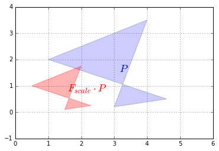
We rescaled the polygon by a factor of 1/2 on both vertical and horizontal axes so the surface area of the resulting polygon is 1/4\(^{th}\) of the original polygon. Let’s compute the determinant and check that:
LA.det(F_scale)0.25Correct!
The determinant can actually be negative, when the transformation results in a “flipped over” version of the original polygon (eg. a left hand glove becomes a right hand glove). For example, the determinant of the F_reflect matrix is -1 because the surface area is preserved but the polygon gets flipped over:
LA.det(F_reflect)-1.0Several linear transformations can be chained simply by performing multiple dot products in a row. For example, to perform a squeeze mapping followed by a shear mapping, just write:
P_squeezed_then_sheared = F_shear.dot(F_squeeze.dot(P))Since the dot product is associative, the following code is equivalent:
P_squeezed_then_sheared = (F_shear.dot(F_squeeze)).dot(P)Note that the order of the transformations is the reverse of the dot product order.
If we are going to perform this composition of linear transformations more than once, we might as well save the composition matrix like this:
F_squeeze_then_shear = F_shear.dot(F_squeeze)
P_squeezed_then_sheared = F_squeeze_then_shear.dot(P)From now on we can perform both transformations in just one dot product, which can lead to a very significant performance boost.
What if you want to perform the inverse of this double transformation? Well, if you squeezed and then you sheared, and you want to undo what you have done, it should be obvious that you should unshear first and then unsqueeze. In more mathematical terms, given two invertible (aka nonsingular) matrices \(Q\) and \(R\):
\((Q \cdot R)^{-1} = R^{-1} \cdot Q^{-1}\)
And in NumPy:
LA.inv(F_shear.dot(F_squeeze)) == LA.inv(F_squeeze).dot(LA.inv(F_shear))array([[ True, True],
[ True, True]], dtype=bool)It turns out that any \(m \times n\) matrix \(M\) can be decomposed into the dot product of three simple matrices: * a rotation matrix \(U\) (an \(m \times m\) orthogonal matrix) * a scaling & projecting matrix \(\Sigma\) (an \(m \times n\) diagonal matrix) * and another rotation matrix \(V^T\) (an \(n \times n\) orthogonal matrix)
\(M = U \cdot \Sigma \cdot V^{T}\)
For example, let’s decompose the shear transformation:
U, S_diag, V_T = LA.svd(F_shear) # note: in python 3 you can rename S_diag to Σ_diag
Uarray([[ 0.89442719, -0.4472136 ],
[ 0.4472136 , 0.89442719]])S_diagarray([ 2. , 0.5])Note that this is just a 1D array containing the diagonal values of Σ. To get the actual matrix Σ, we can use NumPy’s diag function:
S = np.diag(S_diag)
Sarray([[ 2. , 0. ],
[ 0. , 0.5]])Now let’s check that \(U \cdot \Sigma \cdot V^T\) is indeed equal to F_shear:
U.dot(np.diag(S_diag)).dot(V_T)array([[ 1. , 1.5],
[ 0. , 1. ]])F_sheararray([[ 1. , 1.5],
[ 0. , 1. ]])It worked like a charm. Let’s apply these transformations one by one (in reverse order) on the unit square to understand what’s going on. First, let’s apply the first rotation \(V^T\):
plot_transformation(Square, V_T.dot(Square), "$Square$", "$V^T \cdot Square$",
axis=[-0.5, 3.5 , -1.5, 1.5])
plt.show()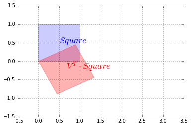
Now let’s rescale along the vertical and horizontal axes using \(\Sigma\):
plot_transformation(V_T.dot(Square), S.dot(V_T).dot(Square), "$V^T \cdot Square$", "$\Sigma \cdot V^T \cdot Square$",
axis=[-0.5, 3.5 , -1.5, 1.5])
plt.show()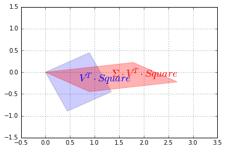
Finally, we apply the second rotation \(U\):
plot_transformation(S.dot(V_T).dot(Square), U.dot(S).dot(V_T).dot(Square),"$\Sigma \cdot V^T \cdot Square$", "$U \cdot \Sigma \cdot V^T \cdot Square$",
axis=[-0.5, 3.5 , -1.5, 1.5])
plt.show()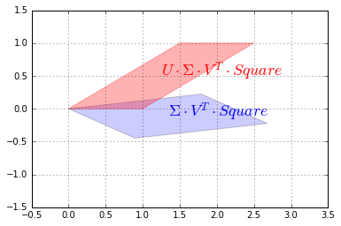
And we can see that the result is indeed a shear mapping of the original unit square.
An eigenvector of a square matrix \(M\) (also called a characteristic vector) is a non-zero vector that remains on the same line after transformation by the linear transformation associated with \(M\). A more formal definition is any vector \(v\) such that:
\(M \cdot v = \lambda \times v\)
Where \(\lambda\) is a scalar value called the eigenvalue associated to the vector \(v\).
For example, any horizontal vector remains horizontal after applying the shear mapping (as you can see on the image above), so it is an eigenvector of \(M\). A vertical vector ends up tilted to the right, so vertical vectors are NOT eigenvectors of \(M\).
If we look at the squeeze mapping, we find that any horizontal or vertical vector keeps its direction (although its length changes), so all horizontal and vertical vectors are eigenvectors of \(F_{squeeze}\).
However, rotation matrices have no eigenvectors at all (except if the rotation angle is 0° or 180°, in which case all non-zero vectors are eigenvectors).
NumPy’s eig function returns the list of unit eigenvectors and their corresponding eigenvalues for any square matrix. Let’s look at the eigenvectors and eigenvalues of the squeeze mapping matrix \(F_{squeeze}\):
eigenvalues, eigenvectors = LA.eig(F_squeeze)
eigenvalues # [λ0, λ1, …]array([ 1.4 , 0.71428571])eigenvectors # [v0, v1, …]array([[ 1., 0.],
[ 0., 1.]])Indeed the horizontal vectors are stretched by a factor of 1.4, and the vertical vectors are shrunk by a factor of 1/1.4=0.714…, so far so good. Let’s look at the shear mapping matrix \(F_{shear}\):
eigenvalues2, eigenvectors2 = LA.eig(F_shear)
eigenvalues2 # [λ0, λ1, …]array([ 1., 1.])eigenvectors2 # [v0, v1, …]array([[ 1.00000000e+00, -1.00000000e+00],
[ 0.00000000e+00, 1.48029737e-16]])Wait, what!? We expected just one unit eigenvector, not two. The second vector is almost equal to \(\begin{pmatrix}-1 \\ 0 \end{pmatrix}\), which is on the same line as the first vector \(\begin{pmatrix}1 \\ 0 \end{pmatrix}\). This is due to floating point errors. We can safely ignore vectors that are (almost) colinear (ie. on the same line).
The trace of a square matrix \(M\), noted \(tr(M)\) is the sum of the values on its main diagonal. For example:
D = np.array([
[100, 200, 300],
[ 10, 20, 30],
[ 1, 2, 3],
])
np.trace(D)123The trace does not have a simple geometric interpretation (in general), but it has a number of properties that make it useful in many areas: * \(tr(A + B) = tr(A) + tr(B)\) * \(tr(A \cdot B) = tr(B \cdot A)\) * \(tr(A \cdot B \cdot \cdots \cdot Y \cdot Z) = tr(Z \cdot A \cdot B \cdot \cdots \cdot Y)\) * \(tr(A^T \cdot B) = tr(A \cdot B^T) = tr(B^T \cdot A) = tr(B \cdot A^T) = \sum_{i,j}X_{i,j} \times Y_{i,j}\) * …
It does, however, have a useful geometric interpretation in the case of projection matrices (such as \(F_{project}\) that we discussed earlier): it corresponds to the number of dimensions after projection. For example:
np.trace(F_project)1This concludes this introduction to Linear Algebra. Although these basics cover most of what you will need to know for Machine Learning, if you wish to go deeper into this topic there are many options available: Linear Algebra books, Khan Academy lessons, or just Wikipedia pages.